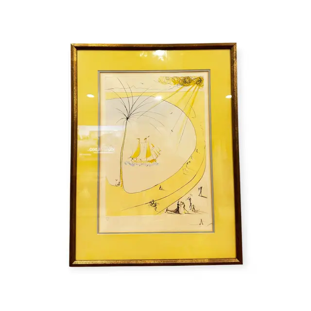
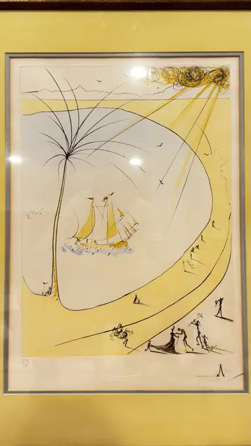
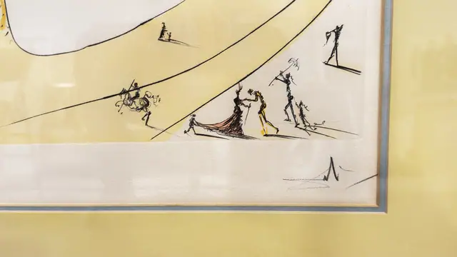
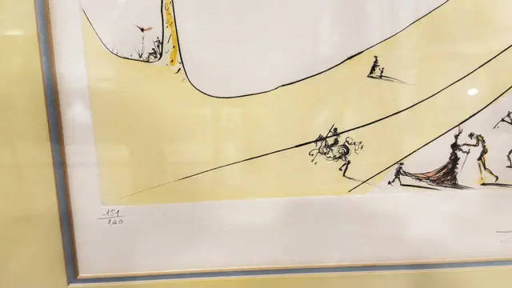

Paintings & Prints
Surrealist Sailboat and Yellow Sun Etching, Numbered Edition, Framed
· second half of the 20th century
Price Upon Request




About the Item
A spare, elegant surrealist composition: a pale oval like an eggshell or a sail dominates the sheet, holding a small yellow-sailed boat afloat on a scribble of blue water, while a fan of fine ink lines shoots from a scribbled black-and-gold sun at the upper right. Along the lower edge, minute attenuated figures in ink and yellow wash dance and gesture across an empty plain, casting long shadows. The palette is limited to lemon yellow, warm grey and black on cream wove paper. Framed with a pale grey slip on a large butter-yellow mat in a dark walnut moulding under glass. Medium: etching with hand or stencil colour on paper. Edition: 151/200. Inscribed on the reverse or mount: 151/200 (pencil, written as a stacked fraction, lower left of the sheet). Condition: Several strong glass reflections across the sheet; paper appears clean with no foxing or toning.
Details
- Creation Year:
- second half of the 20th century
- Dimensions:
- Height: 32.8 in (83.31 cm)
Width: 24.0 in (60.96 cm)
outside of frame - Medium:
- etching with hand or stencil colour on paper
- Edition:
- 151/200
- Period:
- 20Th
- Condition:
- Offered in the condition shown in the photographs.
- Reference Number:
- VO-270
- Documentation:
- No certificate photographed.
- Gallery Location:
- 151/200 (pencil, written as a stacked fraction, lower left of the sheet)